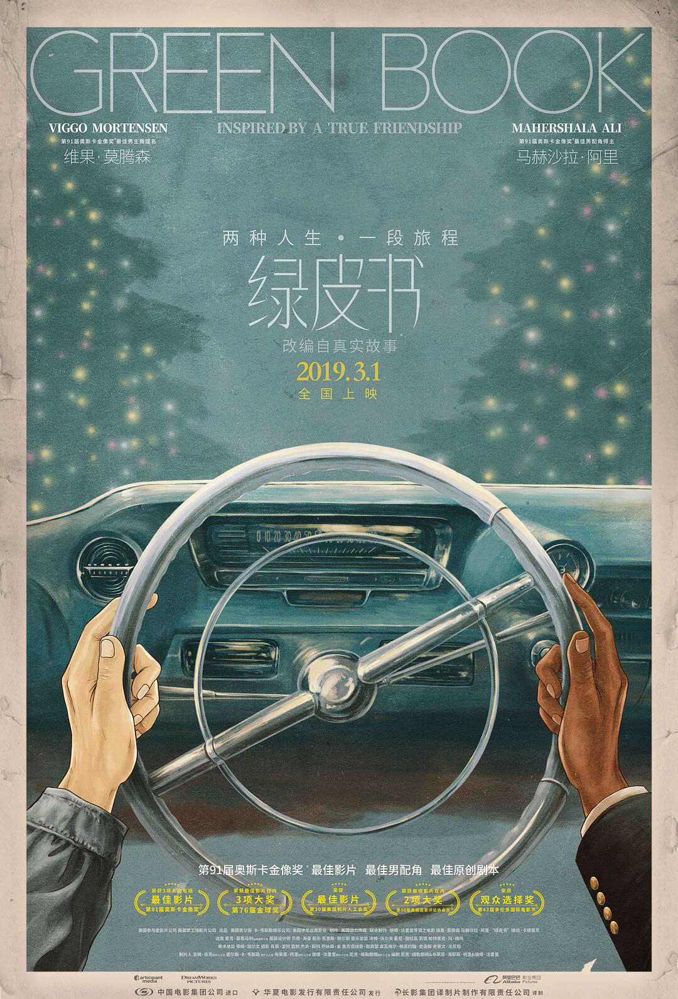

<!DOCTYPE html>
<html>
<head><meta name="generator" content="Hexo 3.8.0">
  <meta charset="utf-8">
  
  <title>Aloha | Gaga酱的奇思妙想</title>
  <meta name="viewport" content="width=device-width, initial-scale=1, maximum-scale=1">
  
    <meta name="keywords" content="萌萌の嘎嘎">
  
  
  
  
  <meta name="description" content="随风潜入夜，润物细无声">
<meta name="keywords" content="小李の观影">
<meta property="og:type" content="article">
<meta property="og:title" content="润物细无声——《绿皮书》影评">
<meta property="og:url" content="http://yoursite.com/2019/03/01/《绿皮书》影评/index.html">
<meta property="og:site_name" content="Gaga酱の奇思妙想">
<meta property="og:description" content="随风潜入夜，润物细无声">
<meta property="og:locale" content="zh-Hans">
<meta property="og:image" content="http://yoursite.com/2019/03/01/《绿皮书》影评/1.jpg">
<meta property="og:image" content="http://yoursite.com/2019/03/01/《绿皮书》影评/2.jpg">
<meta property="og:updated_time" content="2019-09-24T15:20:41.504Z">
<meta name="twitter:card" content="summary">
<meta name="twitter:title" content="润物细无声——《绿皮书》影评">
<meta name="twitter:description" content="随风潜入夜，润物细无声">
<meta name="twitter:image" content="http://yoursite.com/2019/03/01/《绿皮书》影评/1.jpg">
  
  <link rel="icon" href="/css/images/favicon.png">
  
    <link href="//fonts.googleapis.com/css?family=Source+Code+Pro" rel="stylesheet" type="text/css">
  
  <link href="https://fonts.googleapis.com/css?family=Open+Sans|Montserrat:700" rel="stylesheet" type="text/css">
  <link href="https://fonts.googleapis.com/css?family=Roboto:400,300,300italic,400italic" rel="stylesheet" type="text/css">
  <link href="//cdn.bootcss.com/font-awesome/4.6.3/css/font-awesome.min.css" rel="stylesheet">
  <style type="text/css">
    @font-face{font-family:futura-pt;src:url(https://use.typekit.net/af/9749f0/00000000000000000001008f/27/l?subset_id=2&fvd=n5) format("woff2");font-weight:500;font-style:normal;}
    @font-face{font-family:futura-pt;src:url(https://use.typekit.net/af/90cf9f/000000000000000000010091/27/l?subset_id=2&fvd=n7) format("woff2");font-weight:500;font-style:normal;}
    @font-face{font-family:futura-pt;src:url(https://use.typekit.net/af/8a5494/000000000000000000013365/27/l?subset_id=2&fvd=n4) format("woff2");font-weight:lighter;font-style:normal;}
    @font-face{font-family:futura-pt;src:url(https://use.typekit.net/af/d337d8/000000000000000000010095/27/l?subset_id=2&fvd=i4) format("woff2");font-weight:400;font-style:italic;}</style>
    
  <link rel="stylesheet" id="athemes-headings-fonts-css" href="//fonts.googleapis.com/css?family=Yanone+Kaffeesatz%3A200%2C300%2C400%2C700&amp;ver=4.6.1" type="text/css" media="all">

  <link rel="stylesheet" id="athemes-headings-fonts-css" href="//fonts.googleapis.com/css?family=Oswald%3A300%2C400%2C700&amp;ver=4.6.1" type="text/css" media="all">
  <link rel="stylesheet" href="/css/style.css">

  <script src="/js/jquery-3.1.1.min.js"></script>

  <!-- Bootstrap core CSS -->
  <link rel="stylesheet" href="/css/bootstrap.css">
  <link rel="stylesheet" href="/css/fashion.css">
  <link rel="stylesheet" href="/css/glyphs.css">
  <!-- Global site tag (gtag.js) - Google Analytics -->
  <script async src="https://www.googletagmanager.com/gtag/js?id=UA-142486934-1"></script>
  <script>
    window.dataLayer = window.dataLayer || [];
    function gtag(){dataLayer.push(arguments);}
    gtag('js', new Date());

    gtag('config', 'UA-142486934-1');
  </script>


</head>
</html>


  <body data-spy="scroll" data-target="#toc" data-offset="50">


  


<header id="allheader" class="site-header" role="banner">
  <div class="clearfix container">
      <div class="site-branding">

          <h3 class="site-title">
            
              <a href="/" title="Gaga酱の奇思妙想" rel="home"> Gaga酱の奇思妙想 </a>
            
          </h3>
          
          
            <div class="site-description">深水静流</div>
          
            
          <nav id="main-navigation" class="main-navigation" role="navigation">
            <a class="nav-open">Menu</a>
            <a class="nav-close">Close</a>

            <div class="clearfix sf-menu">
              <ul id="main-nav" class="menu sf-js-enabled sf-arrows" style="touch-action: pan-y;">
                    
                      <li class="menu-item menu-item-type-custom menu-item-object-custom menu-item-home menu-item-1663"> <a class href="/">冲鸭❤</a> </li>
                    
                      <li class="menu-item menu-item-type-custom menu-item-object-custom menu-item-home menu-item-1663"> <a class href="/archives">archives❤</a> </li>
                    
                      <li class="menu-item menu-item-type-custom menu-item-object-custom menu-item-home menu-item-1663"> <a class href="/categories">碎碎念的基本法❤</a> </li>
                    
                      <li class="menu-item menu-item-type-custom menu-item-object-custom menu-item-home menu-item-1663"> <a class href="/tags">tags❤</a> </li>
                    
                      <li class="menu-item menu-item-type-custom menu-item-object-custom menu-item-home menu-item-1663"> <a class href="/about">岁月如歌❤</a> </li>
                    
                      <li class="menu-item menu-item-type-custom menu-item-object-custom menu-item-home menu-item-1663"> <a class href="/books">阅❤</a> </li>
                    
                      <li class="menu-item menu-item-type-custom menu-item-object-custom menu-item-home menu-item-1663"> <a class href="/movies">影❤</a> </li>
                    
              </ul>
            </div>
          </nav>

      </div>
  </div>
</header>


  <div id="container">
    <div id="wrap">
            
      <div id="content" class="outer">
        
          <section id="main" style="float:none;"><article id="post-《绿皮书》影评" style="width: 66%; float:left;" class="article article-type-post" itemscope itemprop="blogPost">
  <div id="articleInner" class="clearfix post-1016 post type-post status-publish format-standard has-post-thumbnail hentry category-template-2 category-uncategorized tag-codex tag-edge-case tag-featured-image tag-image tag-template">
    
    
      <header class="article-header">
        
  
    <h1 class="thumb" itemprop="name">
      润物细无声——《绿皮书》影评
    </h1>
  

      </header>
    
    <div class="article-meta">
      
	<a href="/2019/03/01/《绿皮书》影评/" class="article-date">
	  <time datetime="2019-03-01T14:21:33.000Z" itemprop="datePublished">March 1, 2019</time>
	</a>

      
	<span class="ico-folder"></span>
    <a class="article-category-link" href="/categories/小李の文艺日常/">小李の文艺日常</a>
 
      
    </div>
    <div class="article-entry" itemprop="articleBody">
      
        <h4 id="今晚看了绿皮书辣"><a href="#今晚看了绿皮书辣" class="headerlink" title="今晚看了绿皮书辣~"></a>今晚看了绿皮书辣~</h4><p>晚上和老罗一起看了《绿皮书》，说来也很巧合，本来昨晚说太累了想休息，今晚刚好她家属脱团，那我就自动补缺啦~</p>
<p>看完回来的路上一直在想一句诗，</p>
<p><code>随风潜入夜，润物细无声</code></p>
<p>无论是从观念上的改变，还是行为上的改变，都是一种细腻的改变。</p>
<p>这句诗以前读书的时候总是用在写作里面，没想到晚上无法直接言语的情感，就这样被一句诗给诠释了，妙啊~</p>
<p><strong>这部电影是今年现有的观影最佳~</strong></p>
<h4 id="关于《绿皮书》"><a href="#关于《绿皮书》" class="headerlink" title="关于《绿皮书》"></a>关于《绿皮书》</h4><p>看电影之前稍微了解了下背景，<code>《Green Book》</code>是真实存在的，是一本历史上真实存在的黑人出行指南。</p>
<p></p>
<p>电影里的两位男士就以这本小册子为指南，一路南下，完成一场特别的旅程。</p>
<p>两位主角的配置也很有意思，一位是看似放荡不羁但是有着自己特别的为人处世之道的白人老炮儿，一位则是克制冷漠有礼节的黑人音乐家。</p>
<p>就这样这样两个天南地北的人，走到了一起，白人<code>托尼</code>给黑人<code>唐</code>当起了司机，并帮他处理那些“奇怪的难题”，保证唐的巡回顺利演出。</p>
<p>而在旅程中，托尼渐渐理解了这个克制无言的音乐家南下的执着，而唐也慢慢被托尼改变。</p>
<p>虽然并没有大的剧情波动，但是还是感受到的平静下的波涛汹涌和克制的饱满情感。</p>
<p>脸上不动声色，但情感都藏在了那些夜晚的酒、那些强烈的音符和想要说却又咽下的话。</p>
<p>因为是黑人，所以被判定为吃炸鸡，做爵士乐，不能进入白人场所；</p>
<p>也因为存在一半其他国家的血统，会被嘲笑出身。</p>
<p>为什么世界上的人总是这样浅薄而不尊重呢？</p>
<p>所以理解了唐最后的在演出前离去，也是在努力的推动平等的产生。</p>
<p><strong>但，这需要很多的努力。</strong></p>
<h4 id="那些让我记住的瞬间"><a href="#那些让我记住的瞬间" class="headerlink" title="那些让我记住的瞬间"></a>那些让我记住的瞬间</h4><ul>
<li><p>在肯塔基，托尼买了肯德基（其实这是个谐音梗</p>
<p>托尼强硬地把鸡腿塞给唐，唐无措地不知道怎么接受，最后在托尼的“威胁”下只好用手接过。</p>
<p>这下可打开了新世界的大门，唐努力精致的吃鸡腿，完全没意识到自己已经被托尼“带跑偏”。</p>
<p>后来托尼在休息站写信的时候，唐已经可以和他一起坐在休息站喝可乐了。</p>
</li>
<li><p>唐在伯明顿抛下演出，和托尼去了橘鸟酒吧。</p>
<p>在服务员的期待下，身穿的燕尾服的唐走向酒吧的钢琴，这并不是他最熟悉的施坦威钢琴，甚至上面还放了杯威士忌（笑</p>
<p>但是他开始弹肖邦的曲子，那是他最想做的事情，但是世俗并不认可的事情。</p>
<p>昏暗的酒吧灯光，台下是穿着休闲的同胞，但唐的演奏依然出色，也获得了掌声————谁说他们不懂音乐！</p>
<p>果然，不是所有人都能演奏好肖邦的啊~</p>
</li>
<li><p>圣诞节回家后，跟在老理查德夫妇身后，唐出现在了托尼家的门外。</p>
<p>不同于之前看到黑人工人在家喝水后丢掉杯子的模样，托尼一下就拥抱了唐，这个改变了他行为和观念的人。</p>
<p>而唐也跨出了自己的<code>第一步</code>，选择开始拥抱温暖~</p>
<p>这是我最喜欢的结局~</p>
</li>
</ul>
<h4 id="我们都在为彼此变好"><a href="#我们都在为彼此变好" class="headerlink" title="我们都在为彼此变好"></a>我们都在为彼此变好</h4><p>庆幸是和老罗一起看的电影，触动的点那么的相似~在回家路上的讨论也是互相Get到了彼此的点~</p>
<p>而我们的相遇让我们彼此变得更好，虽然我们是如此的不同：</p>
<p>我们肤色不同，出生地不同，</p>
<p>但我可以学着和你一起吃炸鸡喝可乐，你可以学着用文雅的语法，</p>
<p>我也可以为你打破刻板的礼仪，你也可以为我放下拳头。</p>
<h4 id="有一点奇怪的感想"><a href="#有一点奇怪的感想" class="headerlink" title="有一点奇怪的感想"></a>有一点奇怪的感想</h4><p>我们在生活中也会遇到很多人，也经常会以貌取人，或者判断一个人的情况。</p>
<p>其实我们都不曾在外表上看到一个人曾经走过的人生，曾经有过的心路历程，又何谈彻底的了解一个人。</p>
<p>沟通是两个人逐渐认识彼此的一个桥梁，通过沟通逐渐熟悉脾性，了解经历，甚至惺惺相惜，彼此改变。</p>
<blockquote>
<p>世界上那么孤独的人，因为他们都没有有勇气迈出第一步。</p>
</blockquote>
<p></p>
<p>但沟通的前提是接受，你愿意接收对方传递的讯息，而不是拒绝或是避开，我想这会是一个好的开始。</p>
<p><strong>平等地对待每个人，你就能看到ta身上的闪光点。</strong></p>
      
    </div>
    <footer class="entry-meta entry-footer">
      
	<span class="ico-folder"></span>
    <a class="article-category-link" href="/categories/小李の文艺日常/">小李の文艺日常</a>

      
  <span class="ico-tags"></span>
  <ul class="article-tag-list"><li class="article-tag-list-item"><a class="article-tag-list-link" href="/tags/小李の观影/">小李の观影</a></li></ul>

      
        
	<div id="comment">
	
	<!-- 多说评论框 start -->
	 <div class="ds-thread" data-thread-key="/2019/03/01/《绿皮书》影评/" data-title="润物细无声——《绿皮书》影评" data-url="http://yoursite.com/2019/03/01/《绿皮书》影评/"></div>
	<!-- 多说评论框 end -->
	<!-- 多说公共JS代码 start (一个网页只需插入一次) -->
	<script type="text/javascript">
	var duoshuoQuery = {short_name:"iTimeTraveler"};
	  (function() {
	    var ds = document.createElement('script');
	    ds.type = 'text/javascript';ds.async = true;
	    ds.src = (document.location.protocol == 'https:' ? 'https:' : 'http:') + '//static.duoshuo.com/embed.js';
	    ds.charset = 'UTF-8';
	    (document.getElementsByTagName('head')[0] 
	     || document.getElementsByTagName('body')[0]).appendChild(ds);
	  })();
	  </script>
	<!-- 多说公共JS代码 end -->
	
	</div>
	<link rel="stylesheet" href="/css/comment.css">


      
    </footer>
    <hr class="entry-footer-hr">
  </div>
  
    
<nav id="article-nav">
  
    <a href="/2019/03/03/Y想-190303/" id="article-nav-newer" class="article-nav-link-wrap">
      <strong class="article-nav-caption">Newer</strong>
      <div class="article-nav-title">
        
          Y想-190303
        
      </div>
    </a>
  
  
    <a href="/2019/02/28/磨刀霍霍：爬爬爬爬爬爬虫爬起来/" id="article-nav-older" class="article-nav-link-wrap">
      <strong class="article-nav-caption">Older</strong>
      <div class="article-nav-title">磨刀霍霍：爬爬爬爬爬爬虫爬起来~</div>
    </a>
  
</nav>

  
</article>


<!-- Table of Contents -->

  <aside id="sidebar">
    <div id="toc" class="toc-article">
    <strong class="toc-title">Contents</strong>
    
      <ol class="nav"><li class="nav-item nav-level-4"><a class="nav-link" href="#今晚看了绿皮书辣"><span class="nav-number">1.</span> <span class="nav-text">今晚看了绿皮书辣~</span></a></li><li class="nav-item nav-level-4"><a class="nav-link" href="#关于《绿皮书》"><span class="nav-number">2.</span> <span class="nav-text">关于《绿皮书》</span></a></li><li class="nav-item nav-level-4"><a class="nav-link" href="#那些让我记住的瞬间"><span class="nav-number">3.</span> <span class="nav-text">那些让我记住的瞬间</span></a></li><li class="nav-item nav-level-4"><a class="nav-link" href="#我们都在为彼此变好"><span class="nav-number">4.</span> <span class="nav-text">我们都在为彼此变好</span></a></li><li class="nav-item nav-level-4"><a class="nav-link" href="#有一点奇怪的感想"><span class="nav-number">5.</span> <span class="nav-text">有一点奇怪的感想</span></a></li></ol>
    
    </div>
  </aside>


</section>
        
      </div>

    </div>
    <!-- <nav id="mobile-nav">
  
    <a href="/" class="mobile-nav-link">冲鸭❤</a>
  
    <a href="/archives" class="mobile-nav-link">archives❤</a>
  
    <a href="/categories" class="mobile-nav-link">碎碎念的基本法❤</a>
  
    <a href="/tags" class="mobile-nav-link">Tags❤</a>
  
    <a href="/about" class="mobile-nav-link">岁月如歌❤</a>
  
    <a href="/books" class="mobile-nav-link">阅❤</a>
  
    <a href="/movies" class="mobile-nav-link">影❤</a>
  
</nav> -->
    <footer id="footer" class="site-footer">
  

  <div class="clearfix container">
      <div class="site-info">
	      &copy; 2019 Gaga酱の奇思妙想 All Rights Reserved.
        
      </div>
      <div class="site-credit">
        Theme by <a href="https://github.com/iTimeTraveler/hexo-theme-hipaper" target="_blank">hipaper</a>
      </div>
  </div>
</footer>


<!-- min height -->

<script>
    var wrapdiv = document.getElementById("wrap");
    var contentdiv = document.getElementById("content");

    wrapdiv.style.minHeight = document.body.offsetHeight - document.getElementById("allheader").offsetHeight - document.getElementById("footer").offsetHeight + "px";
    contentdiv.style.minHeight = document.body.offsetHeight - document.getElementById("allheader").offsetHeight - document.getElementById("footer").offsetHeight + "px";


    <!-- headerblur min height -->
    
    
</script>
    
<div style="display: none;">
  <script src="https://s11.cnzz.com/z_stat.php?id=1260716016&web_id=1260716016" language="JavaScript"></script>
</div>

<!-- mathjax config similar to math.stackexchange -->

<script type="text/x-mathjax-config">
  MathJax.Hub.Config({
    tex2jax: {
      inlineMath: [ ['$','$'], ["\\(","\\)"] ],
      processEscapes: true
    }
  });
</script>

<script type="text/x-mathjax-config">
    MathJax.Hub.Config({
      tex2jax: {
        skipTags: ['script', 'noscript', 'style', 'textarea', 'pre', 'code']
      }
    });
</script>

<script type="text/x-mathjax-config">
    MathJax.Hub.Queue(function() {
        var all = MathJax.Hub.getAllJax(), i;
        for(i=0; i < all.length; i += 1) {
            all[i].SourceElement().parentNode.className += ' has-jax';
        }
    });
</script>

<script type="text/javascript" src="https://cdn.mathjax.org/mathjax/latest/MathJax.js?config=TeX-AMS-MML_HTMLorMML">
</script>


  <link rel="stylesheet" href="/fancybox/jquery.fancybox.css">
  <script src="/fancybox/jquery.fancybox.pack.js"></script>


<script src="/js/script.js"></script>
<script src="/js/bootstrap.js"></script>
<script src="/js/main.js"></script>


  <script type="text/javascript" src="js/love.js"></script>
  <script type="text/javascript" src="js/float.js"></script>
  <script type="text/javascript" src="js/typewriter.js"></script>
  <script type="text/javascript" color="0,104,183" opacity="1" zindex="-1" count="50" src="js/particle.js"></script>
  </div>

  <a id="rocket" href="#top" class=""></a>
  <script type="text/javascript" src="/js/totop.js" async=""></script>
</body>
</html>
